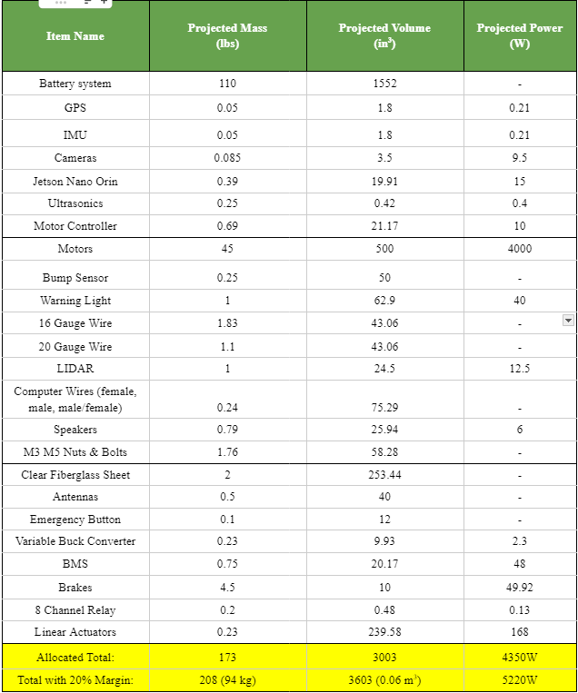
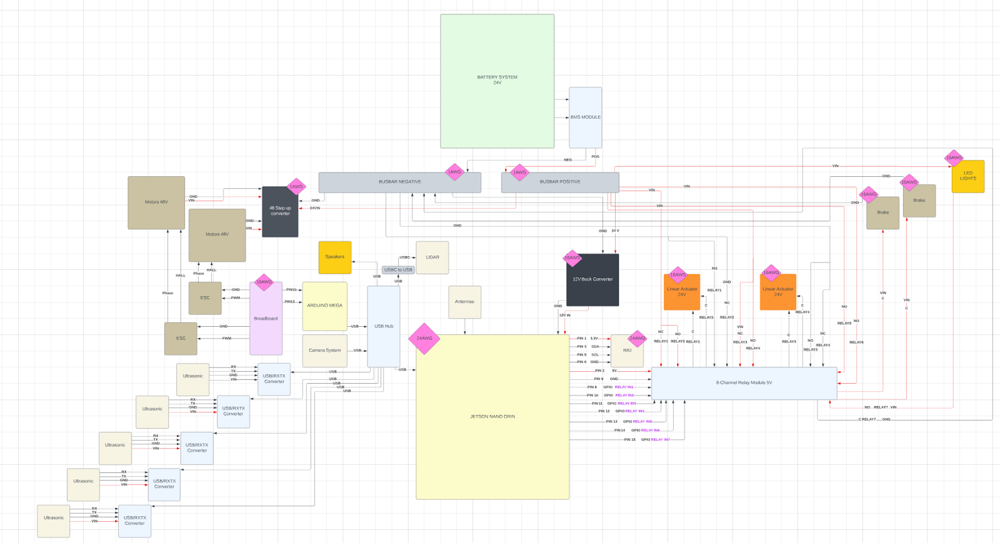
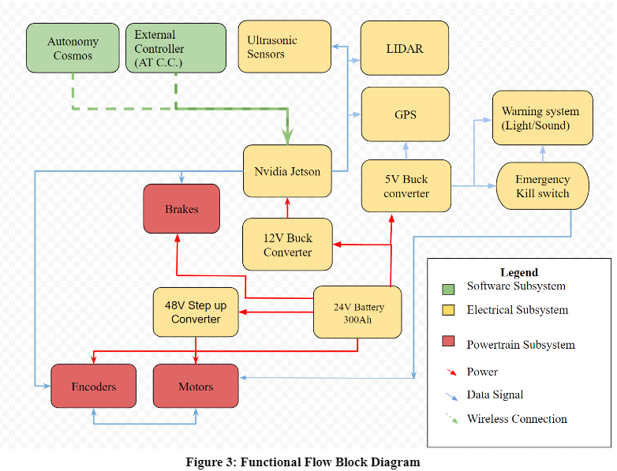
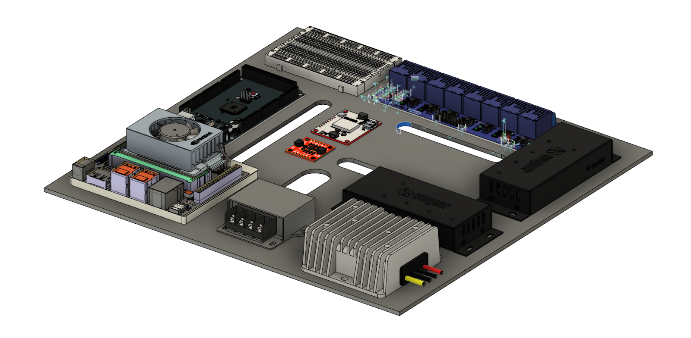

The AEVS, or autonomous electric vehicle system, is an autonomous delivery robot created to deliver packages around campus. The AEV is able to navigate its way throughout campus with its array of sensors, consisting of LIDAR, Ultrasonic Sensors, and cameras. To control the sensors, we are using a Jetson Nano Orin, and for the powertrain, we are using two 2000w motors and brakes to power our vehicle. To open the vehicle, we are using two linear actuators for our door. A control center will be located in the POST building, which will be connected to the vehicle by wifi. As Electrical Systems Lead, I was tasked with managing all of the electronics in the system.
During the start of our project, it was necessary for us to create a Electrical Budget sheet. This sheet would contain all of the parts that we are planning on using, and its mass, volume, and power included in each part. Some notable parts that we are using are the IMU, ultrasonic sensors, and LIDAR. These sensors are necessary for our vehicle to have good navigation and avoid hitting obstacles.

After finishing the power budget, a wiring diagram was created. This wiring diagram will help us during our build phase, making connecting components much easier. After making this wiring diagram, I was able to notice some parts that were necessary, such as more 16 gauge wire.

Check out this link For a higher-resolution view of the diagram.
After Creating the wiring diagram and visualizing how the components will work together, I created a functional flow block diagram. The AEV will receive signals from the control center at Pacific Ocean Science and Technology Building, and will be notified that there is a package for delivery. The AEV will then travel to the location using its LIDAR and GPS in tandem with the powertrain system. In any case of emergencies, the AEV can be stopped via remote control from the control center, or the emergency kill switch on the vehicle. In case of the button being pressed or another external emergency, the warning system will activate, playing an alarm sound and activating its warning lights.

This is the design of the Electronics Board which will house much of the electronics, excluding the parts that will be mounted onto the AEV, like the motor and Linear actuators. This was designed to be easily removable, so that it could be taken out of the AEV to make any changes necessary to the board. The parts included on the board are the Jetson Nano Orin, Ardunino Mega, breadboard for the motor PWMS, IMU, GPS, 8 Channel relay, voltage converters, and USB hubs. I designed this model with holes so that the wires could go under the plate, making wire management much easier.

As this project is still in progress, this webpage will continue to be updated as the project continues.